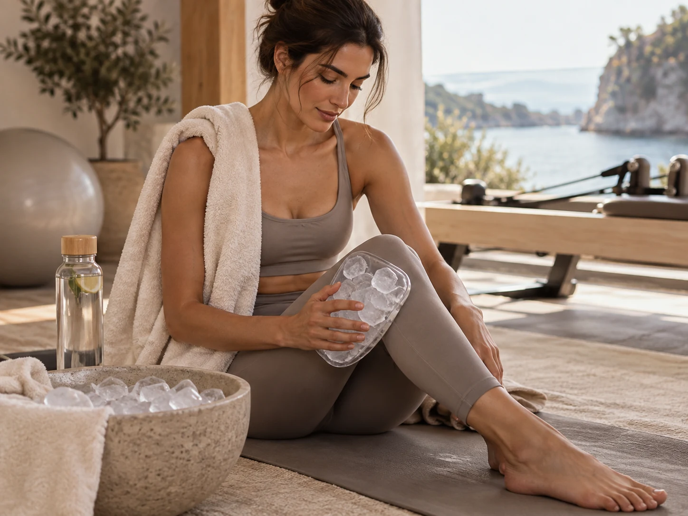
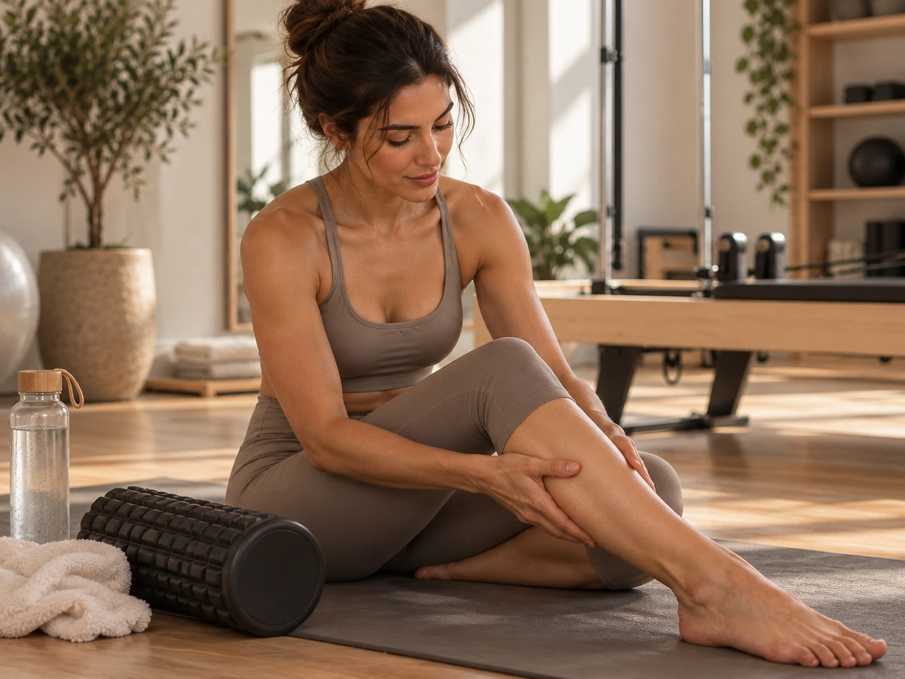

Why Pilates can make you surprisingly sore
Pilates can look controlled and calm, but it asks smaller stabilizing muscles to work for long stretches. Slow repetitions, long holds, and unfamiliar positions can create soreness even when you never felt out of breath during class.
Reformer springs also change the challenge in ways that are easy to underestimate. A movement can feel smooth in the moment and still leave your glutes, inner thighs, shoulders, or abdominals talking to you the next day.
The normal soreness window
Delayed muscle soreness often shows up later the same day or the next morning. It may feel strongest around the second day and then gradually improve. That is one reason a brand new routine can feel fine immediately after class and very different the following morning.
Normal soreness should trend in the right direction. You should be able to move, sleep, and go about your day even if certain muscles feel tender or stiff.

What actually helps
Gentle movement usually feels better than staying completely still. Walking, light mobility, an easy stretch, hydration, regular meals, and a normal night of sleep all support recovery. Heat can feel comforting for general stiffness, while cold may feel better for a specific irritated area.
You do not need to punish soreness with another hard workout. Recovery is part of training. Giving your body time to adapt is what allows the next session to feel stronger.
When to skip the next hard class
If your range of motion is clearly limited, your form would be compromised, or the soreness changes the way you walk or move, choose an easier day. A gentle mat session or walk may make more sense than another intense reformer class.
If you feel a sharp sensation, joint pain, numbness, sudden weakness, or swelling, treat that as something different from routine muscle soreness and get appropriate medical guidance.
How soreness usually changes with consistency
Many people become less sore as the body learns the exercises. That does not mean the class stopped working. It usually means your muscles and nervous system are adapting to the demand.
Progress is better measured by control, strength, balance, stamina, and how well you can perform the movements, not by how sore you are afterward.
This article is general educational information, not individualized medical advice. If pain, injury, pregnancy, or a health condition affects your movement, speak with a qualified healthcare professional.